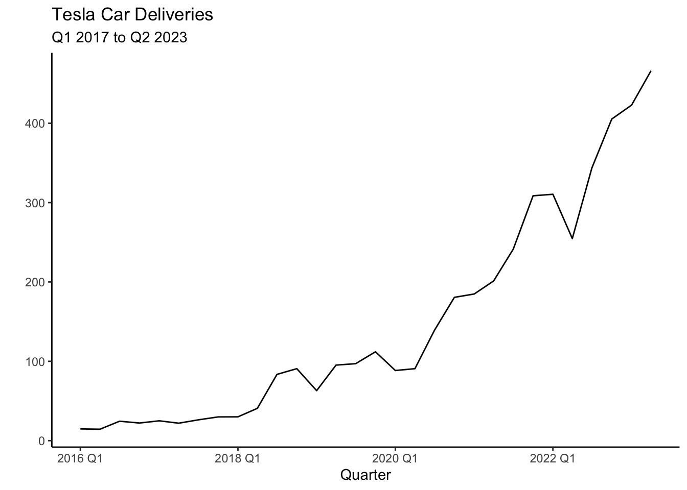
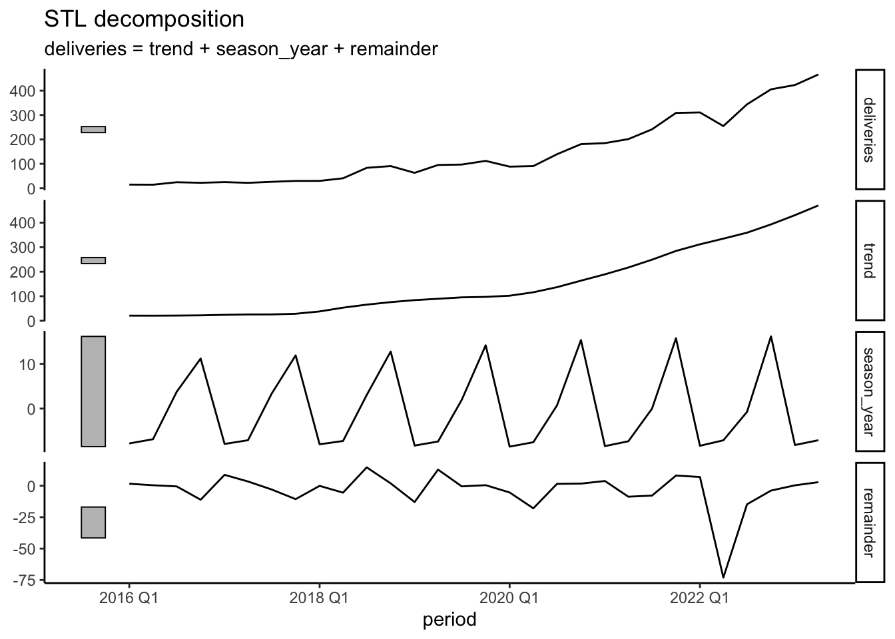
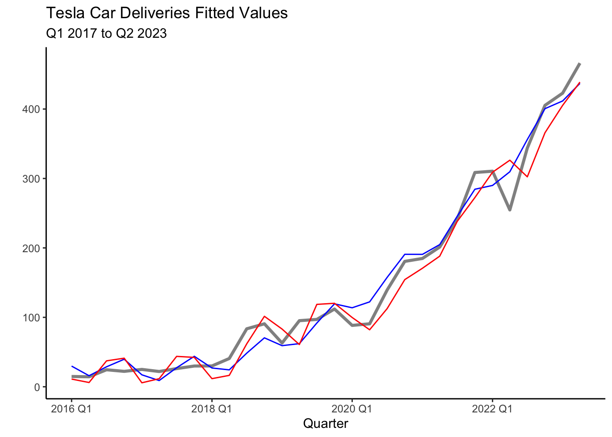
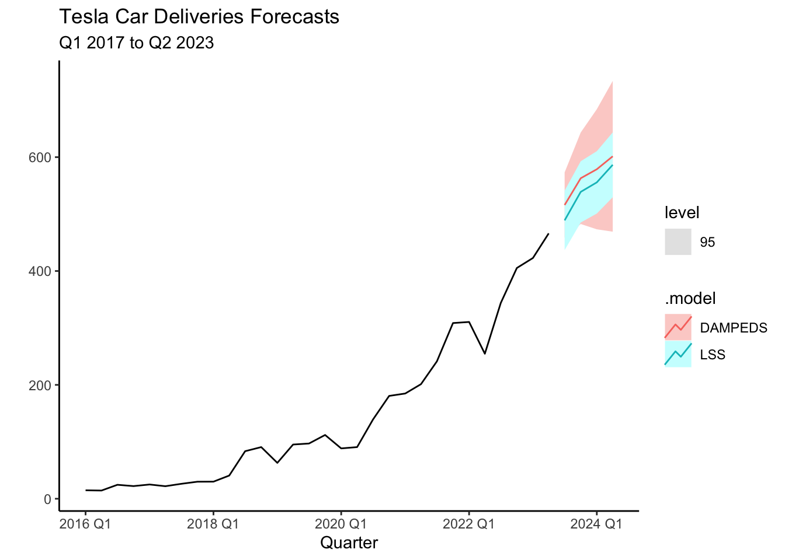

library(fpp3)
# Create tsibble
tesla<-tsibble(
period=yearquarter(c("2016:Q1","2016:Q2","2016:Q3","2016:Q4",
"2017:Q1","2017:Q2","2017:Q3","2017:Q4",
"2018:Q1","2018:Q2","2018:Q3","2018:Q4",
"2019:Q1","2019:Q2","2019:Q3","2019:Q4",
"2020:Q1","2020:Q2","2020:Q3","2020:Q4",
"2021:Q1","2021:Q2","2021:Q3","2021:Q4",
"2022:Q1","2022:Q2","2022:Q3","2022:Q4",
"2023:Q1","2023:Q2")),
deliveries=c(14.8,14.4,24.5,22.2,
25,22,26.2,29.9,
30,40.7,83.5,90.7,
63,95.2,97,112,
88.4,90.7,139.3,180.6,
184.82,201.25,241.3,308.6,
310.5,254.7,343.8,405.3,
422.9,466.1),
index=period # This is the time variable
)6 ETS
In this section we will be introducing and applying the Error, Trend, Seasonality (ETS) model. This model provides a flexible approach for modeling and forecasting time series data by incorporating components for error, trend, and seasonality. The ETS model allows different combinations of these components to be included in the model based on the characteristics observed in the data.
6.1 ETS Components
ETS models build on simple exponential smoothing (SES). The basic idea behind SES is to assign more weight to recent observations and gradually decrease the weights as the observations become older. The model emphasizes the most recent data points and gives less importance to older observations.
Mathematically, the simple exponential smoothing model can be defined as:
where \(l_{t}\) is smoothed value of the series at time \(t\), \(y_t\) is the value observed at the current time period \(t\) and \(\alpha\) is the smoothing parameter. The SES model is useful when forecasting series that have no trend or seasonality.
The SES model can easily be modified to account for both trend and seasonality by including additional components. For example, the Holt’s linear trend method adds a component to account for a linear trend, and there are also damped trend methods that flatten the trend some time into the future. The Holt-Winters model accounts for seasonality. The collection of models that are generated by adding different components are summarized as Error, Trend, and Seasonality (ETS) models.
6.2 Predicting Tesla’s Deliveries
Deliveries are a carefully watched number by Tesla shareholders and are the closest approximation of sales disclosed by the company. Additionally, Tesla’s deliveries are closely followed due to their impact on financial markets, the EV industry, innovation and disruption, production efficiency, and the growth of the EV market. The numbers serve as a key performance indicator for Tesla’s success and provide insights into the broader trends in the electric vehicle industry. Can we use the ETS model to forecast Tesla’s deliveries?
6.3 The Data
The data can be found here Tesla. Below is code that inputs the data as a tsibble in R.
As you can see the tsibble is created with the tsibble() function included in the fpp3 package. The yearquarter() function from the lubridate package is used to coerce the period data to a date. The time variable is then specified via the index parameter. The code below creates the plot of Tesla’s deliveries using the autoplot() function.
tesla %>% autoplot(.vars=deliveries) + theme_classic() +
labs(title= "Tesla Car Deliveries",
subtitle = "Q1 2017 to Q2 2023") +
xlab("Quarter") + ylab(" ")
The most striking aspect of Tesla’s deliveries is the exponential trend. There also seems to be a seasonal component, with relatively higher production in Q2 and Q3 versus the other quarters. These characteristics will be adopted by the ETS model to forecast the series. Below we can see the STL decomposition that confirm these characteristics.
tesla %>%
model(STL(deliveries~trend(window=6)+
season(window=4), robust=TRUE)) %>%
components() %>% autoplot()+ theme_classic()
6.4 Models
To model the data and create the appropriate forecasts, we start by generating test and training sets from the available data.
train_tesla<-filter_index(.data=tesla,"2016 Q1"~"2021 Q4")
test_tesla<-filter_index(.data=tesla,"2022 Q1"~"2023 Q2")There is no fixed rule for determining the length of the train and test sets. In this example, it is important to allocate a sufficiently large portion of the data to the training set to capture the underlying seasonality and trend of Tesla’s deliveries. The sets are easily created using the filter_index() function.
Five models will be estimated based on ETS. The first one is the Simple Exponential Smoothing model with additive errors (SES), the Holt model that includes an additive trend (HOLT), a dampened trend model (DAMPED), a damped model with seasonality (DAMPEDS), and finally an algorithmic function that attempts to select the best ETS model (see Hyndman (2021), Chapter 8). Along with these five models two more models are set forth. The first one is a simple least squares model (LS) and the second one is a quadratic model with seasonality dummies (LSS).
Model selection will be done via cross validation. Recall, that the the stretch_tsibble() function reshapes the tsibble to accommodate for cross validation. The .init parameter sets the first eight observations to estimate our initial model and the .step argument increases the training set by four. Cross validation is done four periods ahead (a year) and accuracy measures are created by comparing forecasts to the test set.
Each component of the ETS model can be included as either multiplicative (\(M\)) or additive (\(A\)). The trend component can be assigned to be damped (\(Ad\) or \(Md\)). If the component is to be omitted from the model, None (\(N\)) is specified. Below is the code to estimate the models and the results of the cross validation.
library(gt)
train_tesla %>% stretch_tsibble(.init = 8, .step=4) %>%
model(
SES=ETS(deliveries ~ error("A") + trend("N") + season("N")),
HOLT=ETS(deliveries ~ error("A") + trend("A") + season("N")),
DAMPED=ETS(deliveries ~ error("A") + trend("Ad") + season("N")),
DAMPEDS=ETS(deliveries ~ error("A") + trend("Ad") + season("A")),
ALGO=ETS(deliveries),
LS = TSLM(deliveries ~ trend()+I(trend()^2)),
LSS = TSLM(deliveries ~ trend()+I(trend()^2)+season()))%>%
forecast(h = 4) %>%
accuracy(tesla) %>% select(-"ACF1") | Cross Validation Models | ||||||||
| .model | .type | ME | RMSE | MAE | MPE | MAPE | MASE | RMSSE |
|---|---|---|---|---|---|---|---|---|
| ALGO | Test | 40.231 | 57.608 | 45.297 | 23.474 | 28.654 | 1.042 | 0.990 |
| DAMPED | Test | 18.701 | 55.497 | 44.900 | 8.033 | 32.803 | 1.033 | 0.954 |
| DAMPEDS | Test | 21.011 | 47.198 | 38.590 | 9.399 | 23.120 | 0.888 | 0.811 |
| HOLT | Test | 15.122 | 57.200 | 46.728 | 4.127 | 34.811 | 1.075 | 0.983 |
| LS | Test | 11.657 | 43.208 | 37.200 | 2.527 | 28.375 | 0.856 | 0.742 |
| LSS | Test | 9.739 | 41.890 | 36.739 | 1.641 | 28.748 | 0.845 | 0.720 |
| SES | Test | 40.991 | 58.160 | 45.750 | 23.988 | 28.824 | 1.053 | 0.999 |
The accuracy measures reveal that the DAMPEDS and LSS models perform consistently well. Below, we will continue with the DAMPEDS and LSS models as the trend seems to be exponential and there seems to be evidence of seasonality. These model are estimated and saved into an object called fit below.
fit <- tesla %>%
model(
DAMPEDS = ETS(deliveries ~ error("A") + trend("Ad") + season("A")),
LSS = TSLM(deliveries ~ trend()+I(trend()^2)+season())
)If one is interested in retrieving the model coefficients, one can use the tidy() function. Below the function is used along with the fit object to retrieve the coefficients of the Least Squares model with seasonality:
tidy(fit) %>% filter(.model=="LSS")| LSS Model Coefficients | ||||
| term | estimate | std.error | statistic | p.value |
|---|---|---|---|---|
| (Intercept) | 36.43 | 13.97 | 2.61 | 0.02 |
| trend() | −7.33 | 1.92 | −3.82 | 0.00 |
| I(trend()^2) | 0.70 | 0.06 | 11.62 | 0.00 |
| season()year2 | −8.63 | 10.91 | −0.79 | 0.44 |
| season()year3 | 8.07 | 11.35 | 0.71 | 0.48 |
| season()year4 | 21.40 | 11.35 | 1.88 | 0.07 |
The output above, reveals that all but the seasonal estimates are statistically significant at the \(5\)% level. The plot below shows the fit of the models with the blue line representing the LS model and the red line the DAMPEDS model.
tesla %>% autoplot(deliveries, lwd=1.2, alpha=0.5) + theme_classic() +
geom_line(aes(y = .fitted), col="blue",
data = augment(fit) %>% filter(`.model`=="LSS")) +
geom_line(aes(y = .fitted), col="red",
data = augment(fit) %>% filter(`.model`=="DAMPEDS")) +
labs(title= "Tesla Car Deliveries Fitted Values",
subtitle = "Q1 2017 to Q2 2023") +
xlab("Quarter") + ylab(" ")
6.5 Information Criterion
We can also attempt to select our models via the AIC, AICc, or BIC. The code below summarizes these measure for the models considered.
train_tesla %>%
model(
SES=ETS(deliveries ~ error("A") + trend("N") + season("N")),
HOLT=ETS(deliveries ~ error("A") + trend("A") + season("N")),
DAMPED=ETS(deliveries ~ error("A") + trend("Ad") + season("N")),
DAMPEDS=ETS(deliveries ~ error("A") + trend("Ad") + season("A")),
ALGO=ETS(deliveries),
LS = TSLM(deliveries ~ trend()+I(trend()^2)),
LSS = TSLM(deliveries ~ trend()+I(trend()^2)+season())) %>%
report() %>%
select('.model',"AIC","AICc","BIC")| Model Fit Information Criterion | |||
| .model | AIC | AICc | BIC |
|---|---|---|---|
| SES | 237.16 | 238.36 | 240.69 |
| HOLT | 233.99 | 237.32 | 239.88 |
| DAMPED | 236.37 | 241.31 | 243.44 |
| DAMPEDS | 233.92 | 250.84 | 245.70 |
| ALGO | 223.19 | 224.39 | 226.73 |
| LS | 150.12 | 152.22 | 154.83 |
| LSS | 147.17 | 154.17 | 155.41 |
Here, once again the LSS model seems to perform the best as it provides the lowest values. Among the ETS models, the ALGO model now stands out. This should be no surprise, as the ALGO model is designed to choose ETS components that minimize the AIC.
6.6 Forecasts
Forecasts are created by using the fit object. We will forecast four quarters ahead using the forecast() function. The code below generates a table with the forecasts.
library(gt)
fit %>%
forecast(h = 4) %>% select(-".model") -> deliveries_fc
deliveries_fc| Forecasts | |||
| period | deliveries | .mean | .model |
|---|---|---|---|
| 2023 Q3 | N(516, 854) | 515.90 | DAMPEDS |
| 2023 Q4 | N(563, 1681) | 562.94 | DAMPEDS |
| 2024 Q1 | N(579, 2895) | 578.73 | DAMPEDS |
| 2024 Q2 | N(602, 4563) | 601.50 | DAMPEDS |
| 2023 Q3 | N(489, 709) | 488.95 | LSS |
| 2023 Q4 | N(539, 754) | 538.99 | LSS |
| 2024 Q1 | N(556, 782) | 555.69 | LSS |
| 2024 Q2 | N(587, 844) | 586.56 | LSS |
Forecasts for the four quarters are shown above, with the corresponding mean. In general, both models predict Tesla will continue its trend and increase its deliveries every quarter. According to the DAMPEDS model, Tesla is expected to deliver about \(516,000\) cars on average with a standard deviation \(854\) cars. If we recall the 68-95-99.7 rule, Tesla deliveries for Q3 of 2023 will likely be between \(513000\) and \(519000\). The increasing standard deviation for future periods reminds us that longer-period forecasts have even more uncertainty. The plot below illustrates the forecasts for both models along with the \(95\)% prediction intervals.
fit %>%
forecast(h = 4) %>%
autoplot(tesla, level=95)+
labs(x="Quarter", y="",
title = "Tesla Car Deliveries",
subtitle = "Q1 2017 to Q2 2023") + theme_classic()
6.7 Readings
The main reading for ETS models comes from Chapter 8 of Hyndman (2021). These readings provide a bit more detail on the mathematical background behind each model and a few more applications.
Hyndman (2021) Chapter 8 (Exponential Smoothing).
6.8 Leasons Learned
In this module you have been introduced to ETS model. Particularly you have learned to:
Use the
model()andETS()functions to estimate the model.Identify when ETS model is superior to other model by using the cross validation and information criterion.
Forecast time series with the ETS model.